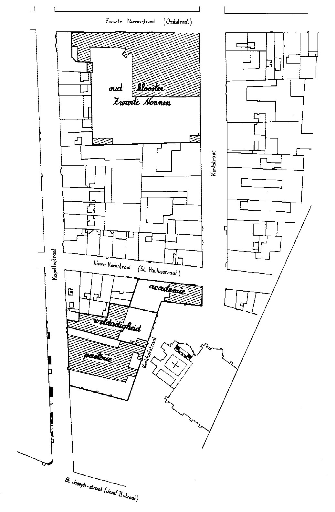

Ostende-2
— notes and map 
les galeries vénitiennes
garde une jardin Japonais
devant un puits artésien,
the Venetian galleries
hide a Japanese garden
in front of an artesian well
Palais des Thermes:
~
the gods are vulnerable
still so fertile, so soft
yet they’re dying out
in front of our eyes
~
art-deco exuberante
frescos, des styles
architecturaux
classiques conservatrices
culminant dans une
forme éclectique
avec des accents
néo-Louis XV
exuberant art deco
frescoes, with styles so
architecturally
classical conservative
culminating in an
eclectic form
with neo-accents
of Louis XV
mes pours les mecs
locales, c’était
de witten ooljefant
chère, une modalité
pour les riches
les bourgeouis,
pas nous, le peuple
ordinaire, les marchants
but for the lads,
the locals, it was
“the White Elephant”
expensive, a luxury
for the rich,
the bourgeoisie,
not us, the people,
the merchants
ma ècole, une palais
napoleonique
althans dat is wat
ze ons hadden
verteld, al lijkt daar
weinig echt van aan
avec des anciens
comme Ensor
my school, a palace
in Napoleon-style
at least that's what
they told us,
although there seems to be
little truth in it
with alumni
like James Ensor (the painter)
~
left with only memories
of roses, his beard, the scent
of lilacs, wild raspberries,
rumour of a long-eared owl
~
(en fait il n'y est
resté que deux ans)
comme Spilliaert
excentrieke ziener van
een vreemde realiteit
(in fact, he only stayed there
for two years)
like Léon Spilliaert (another painter)
eccentric seer of
a strange reality
fort militaire polygonal
au bord de la mer
à l'infini
avant qu'il ne soit fini
polygonal military fort
by the sea
into infinity
before it is all gone
sehnsucht? zeezucht